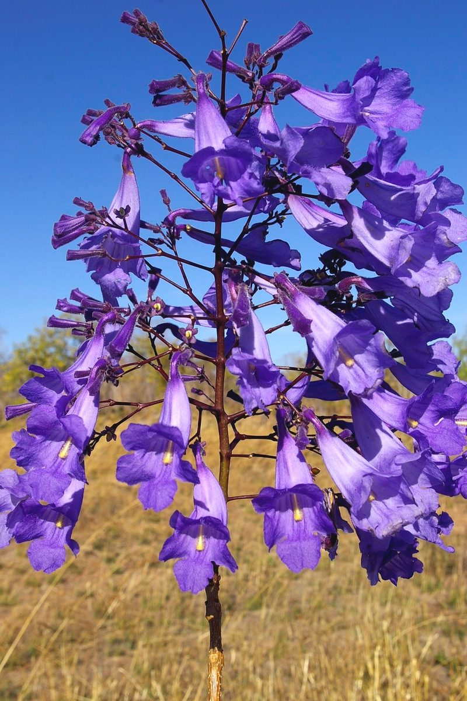

Parikiogodo o jorubo
Caroba
Jacaranda caroba

- Uso
- A raiz em chá contra dores de urina
Como citar
Parikiogodo o jorubo. In: Boe Eno Moto, Etnobotânica. https://boeenomoto.terradoc.org/pt/ethnobotany/173-parikiogodo-o-jorubo.html
Caroba
Jacaranda caroba

Parikiogodo o jorubo. In: Boe Eno Moto, Etnobotânica. https://boeenomoto.terradoc.org/pt/ethnobotany/173-parikiogodo-o-jorubo.html